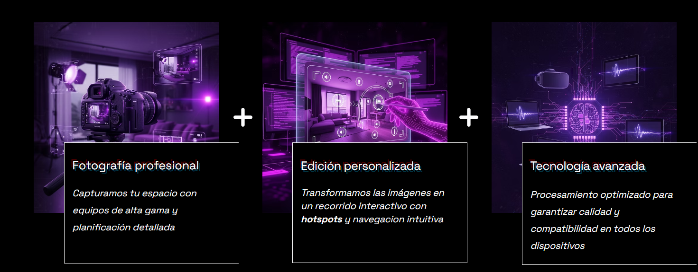
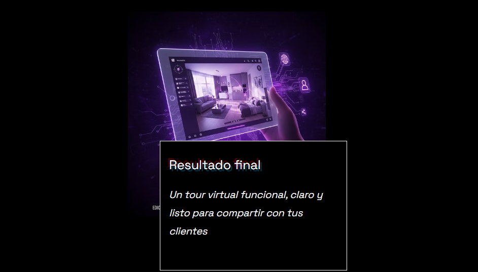

360TourX: Experiencias Digitales y Tours Virtuales

360TourX nace de la necesidad de conectar los espacios físicos con la comodidad del mundo digital. Nuestro enfoque principal es traducir las necesidades específicas de clientes comerciales y del sector inmobiliario en experiencias visuales interactivas.
1. El Método: Fotografía y Edición
Implementamos un flujo de trabajo que combina hardware especializado con software de post-producción avanzado, asegurando calidad y fluidez en cada recorrido.

2. El Resultado: Producto Final
El producto final es un tour virtual interactivo de alta fidelidad, optimizado para ser compartido y visualizado en cualquier dispositivo móvil o de escritorio.

Impacto en el Negocio
Nuestra solución ha permitido a los clientes optimizar sus procesos de venta, reduciendo drásticamente las visitas físicas innecesarias.

Stack técnico y metodologías: